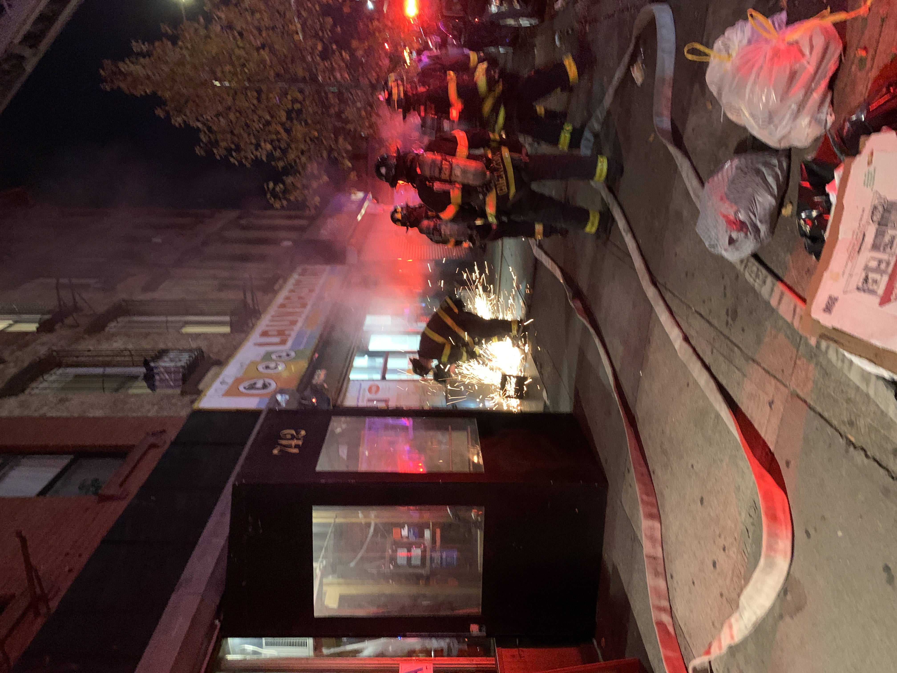

We used to live at 742 Myrtle above a bar called Project Parlor that is now closed. In our first week of moving in we could not fall asleep about of the speakers from down below vibrating the whole apartment. Whenever we brought guests over they would talk about feeling the music in their feet. They would give us free beer though. Someone who worked there had a fat bulldog named Technodog who wore a shiny silver raincoat.
On Thursdays we could really hear the karaoke from upstairs. Chloe and Lex would text us to come watch them sing but we vowed to never contribute to the noise we so much despised. I still have never done karaoke.
We would also see a mouse at least once a month. On Halloween night it was a rat. The same day the laundromat had a fire.

Once they filmed a music video at the bar. Months later we found out it was about Hanukkah.